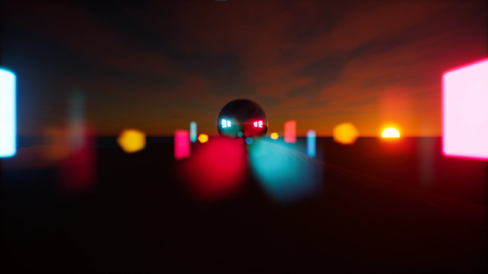

Composition 1
A space that answers stillness — the longer you hold, the further the light goes, until looking out becomes looking in.

A space that answers stillness — the longer you hold, the further the light goes, until looking out becomes looking in.